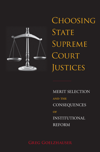

<body bgcolor="#FFFFFF" text="#000000" link="#0000FF" vlink="#CC0000" alink="#CC0000"><center><hr width="350" size="1" align="center" noshade>The first systematic, comprehensive evaluation of whether merit selection actually leads to better judges<hr width="350" size="1" align="center" noshade><p><a href="https://cdcshoppingcart.uchicago.edu/Cart/ChicagoBook.aspx?ISBN=&&PRESS=temple" target="_top">Buy this book!</a> | <a href="https://cdcshoppingcart.uchicago.edu/Cart/Cart.aspx?PRESS=temple" target="_top">View Cart</a> | <a href="https://cdcshoppingcart.uchicago.edu/Cart/Cart.aspx?PRESS=temple" target="_top">Check Out</a></p><p></p></center><!--none//--><h1 class = "booktitle">Choosing State Supreme Court Justices</h1> <h1 class = "subtitle">Merit Selection and the Consequences of Institutional Reform</h1>
<h3>Greg Goelzhauser </h3>
paper: $29.95, May 16<BR>EAN:&nbsp;978-1-4399-1340-6<BR><font color=#990033>Available</FONT><font size=-7><br>&nbsp;</font></p><p class="info">cloth: $84.50, May 16<BR>EAN:&nbsp;978-1-4399-1339-0<BR><font color=#990033>Available</FONT><font size=-7><br>&nbsp;</font></p><p class="info">e-book: $29.95, May 16<BR>EAN:&nbsp;978-1-4399-1341-3<BR><font color=#990033>Available</FONT><font size=-7><br>&nbsp;</font></p></p></td></tr></table>
<BR> <p class="info">192 pp<BR> 5.5 x 8.25<BR> 9 tables, 9 figs. <p class="info"><font size=-7>&nbsp;</font></p><p class="info">
</P><BLOCKQUOTE><p>" <i>A neat and accessible synthesis of the debates on and merits of judicial elections v. merit selection. Importantly, Goelzhauser presents new and unique data and statistical analyses of those data. </i>Choosing State Supreme Court Justices <i> is well-done, and well-worth reading. It significantly enhances our understanding of this critical part of our judicial system</i><i>."<br/></i>-<b>Gregory A. Caldeira</b>, Distinguished University Professor in Political Science and Dreher Chair in Political Communication and Policy Thinking at the Ohio State University and co-author of <i>Citizens, Courts, and Confirmations: Positivity Theory and the Judgments of the American People</i><br>
</BLOCKQUOTE>
<p>Since 1940, more than half of all states have switched at least in part from popular election or elite appointment to experiment with merit selection in choosing some or all of their state supreme court justices. Under merit selection, a commission-often comprising some combination of judges, attorneys, and the general public-is tasked with considering applications from candidates vying to fill a judicial vacancy. Ostensibly, the commission forwards the best candidates to the governor, who ultimately appoints them. Presently, numerous states are debating whether to adopt or abolish merit selection. <br/><br/>In his short, sharp book, <i>Choosing State Supreme Court Justices</i>, Greg Goelzhauser utilizes new data on more than 1,500 state supreme court justices seated from 1960 through 2014 to answer the question, Does merit selection produce better types of judges? He traces the rise of merit selection and explores whether certain judicial selection institutions favor candidates who have better qualifications, are more diverse, and have different types of professional experience.<br/>Goelzhauser's results ultimately contribute to the broader debate concerning comparative institutional performance with respect to state judicial selection.<br>
<P CLASS="top"><A HREF="#top">BACK TO TOP</A></P>&nbsp;<h2 class="inpageheading"><A NAME="excerpt"></a>Excerpt</h2><p><A HREF="http://www.temple.edu/tempress//chapters_1800/2397_ch1.pdf">&#11;Read the Introduction (pdf).</a><p><br>
<P CLASS="top"><A HREF="#top">BACK TO TOP</A></P>
<BR>&nbsp;
<h2 class="inpageheading"><A NAME="reviews"></a>Reviews</h2>
<p>"Choosing State Supreme Court Justices <i>is timely and well-conceived. Goelzhauser has engaged in an impressive amount of data collection, and his analyses are strong. He has done an excellent job clarifying how he codes ‘merit system' and the reasons for his choices. This book promises to be the most comprehensive analysis of the so-called merit selection of judges to date. Given the importance of judicial selection to both scholars and practitioners, a book like this is sorely needed."<br/></i>-<b>Chris Bonneau</b>, Associate Professor of Political Science at the University of Pittsburgh and co-author of <i>Voters' Verdicts: Citizens, Campaigns, and Institutions in State Supreme Court Elections</i><br>
<p>"Goelzhauser revives the discussion of a seemingly age-old debate about the 'best' way to select state supreme court justices.... Goelzhauser presents a precise, comprehensive, empirical treatment of the best available data to date. This book remains accessible to laypeople while presenting sophisticated statistical analyses. Although Goelzhauser ultimately (and wisely) declares no winner in the debate, the nuances he is able to glean will help frame this important debate in public policy domains as well as in academic circles. Highly recommended."<br/>-- <b><i>Choice</i></b><br>
<p>" <i>In this excellent new book, Greg Goelzhauser addresses a broad fundamental question related to political representation, judicial selection, court reform, and the politics of institutions: Does 'merit selection' produce more qualified state supreme court justices or better diversify the bench relative to other methods of initial selection.... Goelzhauser delivers a thought-provoking, well written, and expertly executed project that should be a welcome addition to any political science collection. Without question, the intriguing findings and discussion framing the analysis and conclusions in </i>Choosing State Supreme Court Justices <i>are major contribution to political science, with substantial implications for theories of representation, institutions, and judicial politics. They also speak to audiences outside the academy, especially state lawmakers and other public policy advocates seeking to improve the process of judicial selection</i>. <i>"<br/></i><i>-</i><b><i>Law and Politics Book Review</i></b><br>
<p>"Choosing State Supreme Court Justices <i>(is) a long-range, cross-sectional empirical summation of the characteristics of state supreme court judges across their corresponding judicial selection systems. Quite frankly, however, the book is much more than that. It not only offers the aforementioned analysis, which involves an impressive data collection effort of biographical information on approximately 1,500 state supreme court justices.... It is also rich in historical and contextual analysis.... Goelzhauser's (book) is a much-needed and important contribution to our literature.... The real strength of Goelzhauser's book, however, is its thoughtful and thorough empirical approach."<br/>-</i><b><i>Journal of Politics</i></b><br>
<P CLASS="top"><A HREF="#top">BACK TO TOP</A></P>&nbsp;<P>
<h2 class="inpageheading"><A NAME="contents"></a>Contents</h2><P><span style="font-family: 'Verdana';font-size: 13px;" >List of Tables and Figures<br/><br/> Acknowledgments <br/><br/>1. Introduction<br/>2. Merit Selection&rsquo;s Rise<br/>3. Professional Experience across Selection Systems<br/>4. Seating Qualified Justices<br/>5. Seating Diverse Justices<br/>6. Conclusion<br/><br/> Appendix A: Data Collection<br/> Appendix B: Tables of Results<br/><br/> Notes<br/> References<br/> Index</span></P>
<P CLASS="top"><A HREF="#top">BACK TO TOP</A></P>
</P><BR>&nbsp;
<H2 class="inpageheading"><A NAME="author bio"></a>About the Author(s)</H2><p><b>Greg Goelzhauser </b>is an Assistant Professor of Political Science at Utah State University.<br>
<P CLASS="top"><A HREF="#top">BACK TO TOP</A></P>
<p><h2 class="inpageheading"><a name="subjects"></a>Subject Categories</h2> <p><a href="http://www.temple.edu/tempress/political.html" target="_top">Political Science and Public Policy</a> <br><a href="http://www.temple.edu/tempress/law.html" target="_top">Law and Criminology</a> <br><a href="" target="_top"></a> <br><a href="" target="_top"></a> <br><a href="" target="_top"></a> </p>
</p>
<P>
</P>
<p align="center"><a href="https://cdcshoppingcart.uchicago.edu/Cart/ChicagoBook.aspx?ISBN=&&PRESS=temple" target="_top">Buy this book!</a> | <a href="https://cdcshoppingcart.uchicago.edu/Cart/Cart.aspx?PRESS=temple" target="_top">View Cart</a> | <a href="https://cdcshoppingcart.uchicago.edu/Cart/Cart.aspx?PRESS=temple" target="_top">Check Out</a></p><p><font face="Arial" size="1"><a href="copyright.html" onMouseOver="window.status='Web Copyright Policy';return true;" onMouseOut="window.status=''" title="Web Copyright Policy">&copy;</a> 2016 <a href="http://www.temple.edu" target="new" onMouseOver="window.status='Link to Temple University home page';return true;" onMouseOut="window.status=''" title="Link to Temple University home page">Temple University</a>. All Rights Reserved. http://www.temple.edu/tempress/titles/2397_reg.html</font></p>